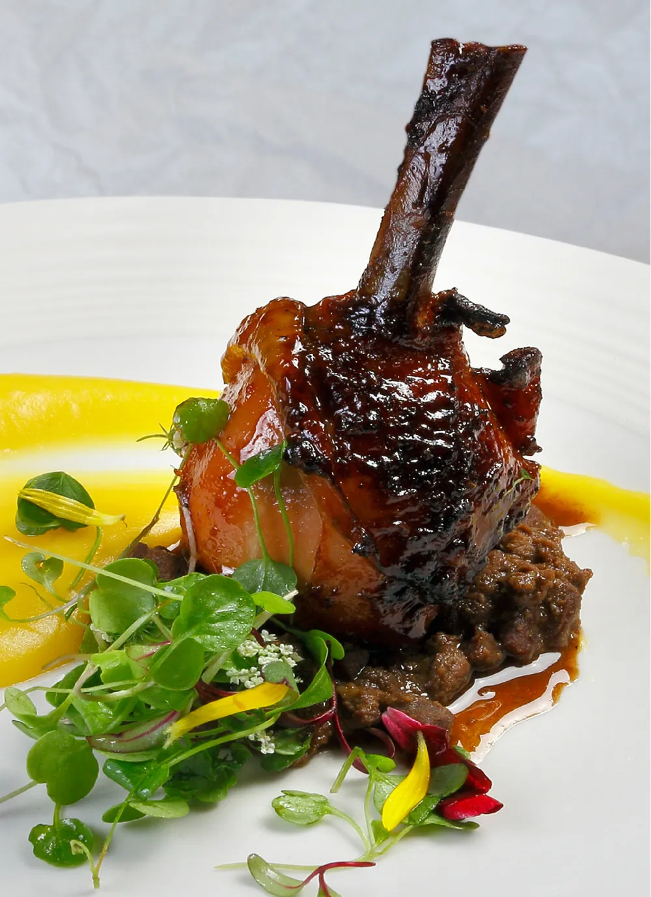

Diversos
- Couscous marroquino de carne seca com ratatouille de legumes
- Couscous marroquino de pato
- Costelinha ao molho ferrugem com polentinha
- Creme de aipim com costelinha ao molho ferrugem
- Creme de aipim com ragu de carne seca e crisp de queijo
- Escondidinho de aipim com carne seca e catupiry
- Escondidinho de aipim com haddock
- Escondidinho de aipim com frango defumado e catupiry
- Musseline de baroa com ragu de cordeiro
- Arroz de frutos do mar
- Arroz de pato
- Arroz de lula